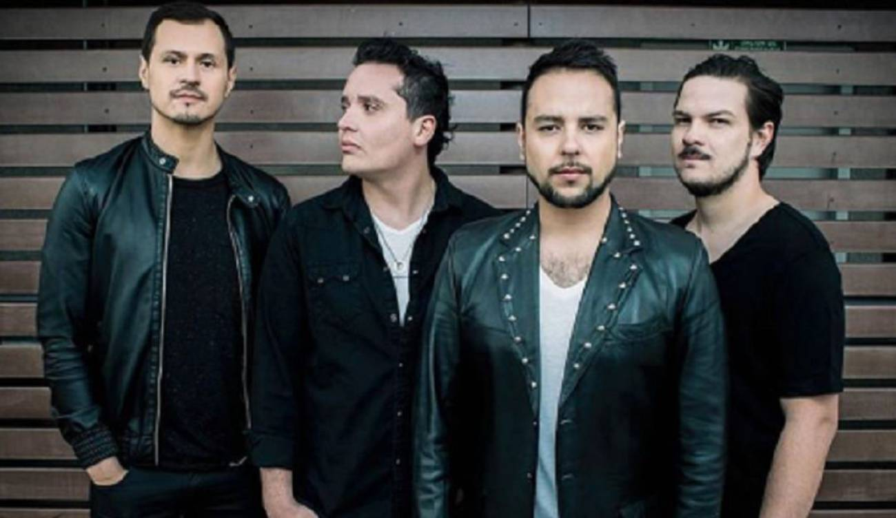

Don Tetto es una banda de Rock integrada por Diego Pulecio (cantante y guitarrista), Carlos Leongómez (guitarrista), Jaime Valderrama en voz secundaria y (bajista) y Jaime Medina en voz y (baterista). Fue formada en el año 2003 por Diego Pulecio y Carlos Leongómez en Bogotá, Colombia.
